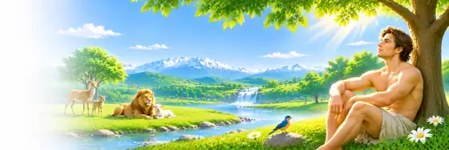
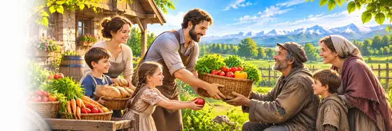

The Creator: Ultimate Ground, Origin, and Cause
Creation cannot explain its own existence. It points beyond itself to the Creator as the first cause and ground of being.
Creation cannot explain its own existence. It points beyond itself to the Creator as the first cause and ground of being.
The Creator's fullness overflows into creation. Creation, in turn, finds meaning through relationship with its source.
All things come from one source and yearn for reunion. The Creator reaches outward as creation turns inward.
Visible matter and invisible order belong together. One gives the other a place to be expressed.
The Creator exceeds our full understanding, yet is not absent. Creation bears traces of divine intelligence, beauty, goodness, and order.
Humanity unites the visible body and invisible soul in one living being. Through embodied action, spirit and will take form in the world.

The human soul seeks meaning, purpose, truth, and freedom. We flourish as we reflect the Creator's nurturing goodness in our lives.
We seek relationship with the Creator and oneness with one another. Love expands from the self and family to all humanity.
The soul gives life its direction; the body makes action possible. A meaningful life joins both in service of a calling.
Free will gives us the power to choose. Intelligence helps us learn from consequences and grow in wisdom.
Life brings real needs and real pleasures, but neither is its ultimate purpose. Our calling should guide how we work and enjoy.
The Creator holds ultimate ownership, while human possession remains a real right. Stewardship calls us to care for and share what we hold.

Hardship can reveal what we do not yet understand. Recording and sharing those lessons helps prevent harm from recurring.